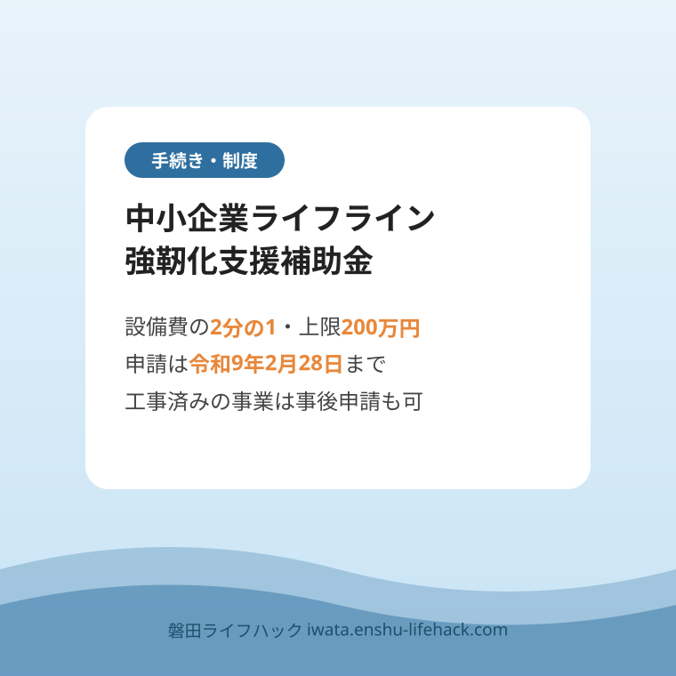

手続き・制度
磐田市の中小企業ライフライン強靭化支援補助金｜設備費の2分の1・上限200万円、申請は令和9年2月28日まで

この記事の要点
Q. 磐田市の中小企業ライフライン強靭化支援補助金は、誰が・いくら受けられますか？
A. 市内に事業所・営業所・生産地がある中小企業者・個人事業主（農業者含む）などが対象。省エネ設備への更新、自家消費型の再エネ設備・蓄電池、水資源設備の3区分に、対象経費の2分の1以内・上限200万円を補助。申請は1事業者1回限りで、期間は令和9年2月28日まで（予算がなくなり次第終了）。窓口は市役所の担当窓口（国府台3-1、電話0538-37-4904）。
店舗や工場、事務所のエアコンや給湯器が古くなり、光熱費の負担が重くなっている。そんな市内の事業者に向けて、磐田市が設備の更新や導入を後押しする補助金を始めました。「磐田市中小企業ライフライン強靭化支援補助金」です。受付は令和8年10月30日に始まっていて、令和9年2月28日まで続きます。
この記事では、磐田市公式ページ（ページ番号1017077、2026年10月22日更新）と「令和8年度 磐田市中小企業ライフライン強靭化支援補助金交付要領」を実際に開いて、対象者・対象になる設備・補助額・申請の二つの進め方を確認しました。すでに工事を終えた事業にも使える区分がある一方で、順番を間違えると対象から外れる決まりもあるため、要点を順に整理します。
まず結論｜設備費の2分の1、上限200万円。申請は1事業者1回限り
補助額は、補助対象経費の2分の1以内で、上限は200万円です。1,000円未満の端数は切り捨てられ、消費税は対象経費に含まれません。金額はすべて税抜きで計算します。
対象になる事業は三つの区分です。既存の事業用設備を省エネルギー効果の高い設備へ更新する事業、自家消費型の再生可能エネルギー設備や蓄電池を導入・更新する事業、事業に必要な水資源の確保・有効活用に資する設備を導入する事業です。複数の区分をまとめて申請することも認められています。
ただし、申請は1事業者につき1回限りです。あとから別の設備を追加で申請することはできないため、入れ替えたい設備や入れたい設備は、先に洗い出してから申請書を作る必要があります。
対象者｜市内に事業所・営業所・生産地がある中小企業者と個人事業主
対象者は、中小企業基本法に規定する中小企業者、その中小企業者が組織する団体、個人事業主（農業者を含みます）、そして常時使用する従業員の数が300人以下の医療法人・社会福祉法人・NPO法人です。
条件として、市内に事業所、営業所または生産地を有すること、市税の滞納がないことが求められます。風俗営業などを営む事業主、宗教活動や政治活動を目的とする事業の事業主などは対象から除かれます。
もう一つ大切な条件があります。災害時などに、事業活動に支障のない範囲で、補助金を使って整備した設備の特性に応じて地域防災への協力を行うことに同意する方であることです。この補助金は、省エネや再エネの後押しであると同時に、災害時の地域防災力を高める目的を持っています。
財源には、国の物価高騰対応重点支援地方創生臨時交付金が活用されています。物価高騰の影響を受ける中小企業者などの光熱水費などの固定費負担を軽くすることと、地域防災力の向上を図ることが、市の掲げる目的です。
対象事業の三区分｜更新・再エネと蓄電池・水資源
区分アは、既存の事業用設備を省エネルギー効果の高い設備へ更新する事業です。対象設備の例として、業務用エアコンやガスヒートポンプエアコン、ルームエアコンなどの空調設備、給湯器やボイラなどの給湯設備、高効率コージェネレーション、産業用ヒートポンプなどが要領に挙げられています。新規の設置は対象外で、あくまで更新が対象です。
区分アの設備には、省エネ効果の裏づけも必要です。経済産業省の「省エネ・非化石転換補助金」で対象設備として公表されているもの、省エネラベルなどが表示された製品、更新前の設備よりエネルギー使用量が5％以上削減されることが確認できる設備の、いずれかに当たることが条件です。5％削減で示す場合は、カタログや仕様書などで客観的に確認できることが求められます。
区分イは、自家消費型の再生可能エネルギー設備、蓄電池、またはその両方を導入・更新する事業です。太陽光発電は、発電した電力を事業用に使う自家消費型に限られ、売電目的の設備（FITやFIPの認定を受けたものなど）は対象外です。産業用蓄電池は、新しい発電設備と一緒に付ける場合だけでなく、既にある自家消費型の発電設備へ追加で付ける場合も対象で、その場合は蓄電池の設置に係る部分だけが対象経費になります。EV外部給電設備も対象に含まれます。
区分ウは、事業活動に必要な水資源の確保・有効活用に資する設備を導入する事業です。井戸やポンプ、ろ過設備、受水槽や貯水槽、雨水再利用設備、給水ポンプなどが挙げられています。井戸設備は事業用の水道使用量の減少につながるものが対象で、自宅へ配管を通すなど事業目的以外でも使えてしまう形は対象外です。受水槽と貯水槽は、緊急給水栓がある設備に限られます。
いずれの区分でも、中古の設備は対象外です。また、設備は市内の事業所などに設置し、補助対象者の事業に使うものであること、導入や更新によってエネルギーや水資源の使用量、光熱水費などの削減が見込まれることが、共通の要件になっています。

補助額と対象経費｜設計費・設備費・工事費が対象、撤去費は対象外
補助対象経費は、設計費、設備費、工事費の三つです。設計費は補助対象事業に必要な設備などの設計に要する経費で、事業計画書を作成するための設計費は対象になりません。設備費は設備の購入や据え付けに要する経費、工事費は事業に必要な工事に要する経費です。
見落としやすいのは、既存設備の撤去・移設・廃棄・処分の費用は対象にならない点です。エアコンの入れ替えでは、古い機器の撤去費が見積りに含まれるのが普通です。補助額の計算で迷わないよう、見積りの段階で本体・工事・撤去の費用を分けて書いてもらうと、あとが楽になります。
支払いの方法にも決まりがあります。認められるのは現金、銀行振込、口座振替のみで、手形や小切手、相殺払は認められません。クレジットカードは、カードの名義が補助事業者と同一で、支払日が補助対象期間内にある1回払いの場合だけ対象です。振込手数料や代引手数料は対象経費に入りません。
税抜き50万円以上の設備や外注工事は「処分制限財産」に当たります。事業が終わったあとも、耐用年数に相当する期間は、市の承認なしに処分や譲渡、貸し付け、担保に入れることができません。承認を受けずに処分すると、補助金の返還を求められる場合があります。また、補助事業に係る証拠書類は、事業完了後5年間保管しなければならず、その間は市の調査が行われる場合があります。
申請は二つの進め方｜事前申請と事後申請
この補助金には「事前申請」と「事後申請」の二つの進め方があります。分かれ目は、設備の設置と工事、支払いが終わった時期です。
事後申請は、令和8年4月1日から10月29日までの期間に設備設置と工事が完了し、支払いも済んでいる場合の進め方です。今年度すでにエアコンを入れ替えた、太陽光発電を付けたという事業でも、条件に合えば申請できます。交付申請書に事業実績報告書（様式第2号）と領収書の写しなどを添えて、1回で提出します。完了報告の手続きはありません。
事前申請は、これから事業を行う場合の進め方です。交付申請書や事業計画書（様式第2号）、見積書の写しなどを提出し、市から交付決定通知書を受け取ってから、設備の発注・契約・支払いを行います。通知を受け取る前に発注した分は対象にならない前提で進めてください。事業が終わったら、完了後7日以内または令和9年3月5日のいずれか早い日までに、完了報告書や事業実績報告書を提出します。期限までに提出が確認できないと、交付決定を受けていても補助金は交付されません。
どちらの進め方でも、申請の最終期限は令和9年2月28日です。対象になるのは、令和8年4月1日以降に実施し、令和9年2月28日までに設備設置・工事・支払いのすべてが完了する事業で、令和9年3月1日以降の支払いは対象外です。なお、令和8年4月1日以降に着手して10月29日時点で完了していない場合は、市の担当窓口へ相談するよう案内されています。受付は予算がなくなり次第終了し、予算の執行状況によって期限が変わる場合もあります。

設備を付けたあとは「地域防災に関する届け出」が必須
この補助金ならではの手続きが、設備設置後の「地域防災に関する届け出」です。設備の種類に応じて行き先が分かれます。空調設備は、クーリングシェルター（指定暑熱避難施設）への応募です。井戸設備は、災害時協力井戸への登録です。その他の設備は、市の地域防災協力に関する登録要領に基づく承諾書の提出になります。
届け出の時期は、事前申請では事業の実施後（事業実績報告のとき）、事後申請では交付申請のときです。届け出が確認できる書類を、申請書類とあわせて提出します。
届け出の内容は、企業名・所在地・取組内容などが市のホームページで公表されます。補助金を受けたら終わりではなく、災害時に地域へ設備を役立てる約束とセットの制度だという点は、申請前に社内で共有しておきたいところです。補助金の支払いは、事前申請では交付確定日、事後申請では交付決定日から、概ね1か月後とされています。
窓口と提出方法｜電話0538-37-4904、メールと電子申請も可
提出先と問い合わせ先は、磐田市役所の担当窓口です。住所は磐田市国府台3-1（郵便番号438-8650）、電話は0538-37-4904、メールはsangyo@city.iwata.lg.jpです。提出方法は、窓口への持参、郵送、メール、電子申請から選べます。窓口の受付時間は、11月2日から午前9時から午後4時30分と案内されています。
申請書類の様式は、市のホームページからダウンロードできます。事前申請では、交付申請書類チェック表、交付申請書（様式第1号）、事業計画書（様式第2号）と見積書の写しなどの根拠資料、法人事業概況説明書（個人事業主は確定申告書、農業者は農業収入が確認できる書類も）直近1期分、設備や工事の仕様が確認できる書類の写しが基本セットです。区分アの場合は、更新前の設備の写真も加わります。書類の不備や添付漏れがないよう、チェック表でそろっているかを確かめてから提出してください。
良い点
良い点は3つあります。第一に、すでに終わった工事にも使える事後申請の区分がある点です。令和8年4月1日から10月29日までに設置・工事・支払いを終えた事業が対象になるため、補助金の開始を知る前に設備を入れ替えた事業者にも、申請の機会が残されています。
第二に、区分が三つに分かれ、複数をまとめて申請できる点です。エアコンの更新と蓄電池の導入、井戸の整備といった組み合わせを、1回の申請に束ねられます。1事業者1回限りという制約と噛み合った設計です。
第三に、上限200万円・補助率2分の1という規模です。税抜きの対象経費が400万円以上の事業で上限に達する計算で、小規模な更新から、太陽光発電と蓄電池の組み合わせのような大きな投資まで、同じ物差しで検討できます。
注文したい点
注文したい点もあります。まず、申請が1事業者1回限りで、交付決定額の増額変更も認められない点です。あとから「もう一台追加したい」となっても受け付けられません。設備の洗い出しと見積りの精度が、そのまま補助額を左右します。
また、期限の重なり方です。申請も工事も支払いも令和9年2月28日までに終える必要があり、事前申請の完了報告は完了後7日以内という短さです。設備の納期が読みにくいものは、2月に入ってから動くと間に合わないおそれがあります。逆算の起点は、工事の完了予定日ではなく支払日まで含めた日程で置くべきです。
さらに、予算がなくなり次第終了という点です。受付期間が令和9年2月28日までと書かれていても、予算の執行状況で前倒しになる場合があります。対象と分かった時点で、受付が続いているかを窓口に確かめてから発注計画を固める進め方が安全です。
対案・結論
対案として提案したいのは、設備の更新計画を「壊れてから考える」のではなく、補助金の受付期間に合わせて前倒しで点検する運用です。空調や給湯の設備は、故障した時点で業者の手配も価格交渉も受け身になります。この補助金は事後申請の窓も用意されているため、今年度に更新済みの事業は領収書と写真の所在を先に確かめ、これから更新する事業は交付決定を待ってから発注する、という二つの動きを分けて進めるのが実務的です。
結論として、この補助金は、市内に事業所などがある中小企業者・個人事業主などが対象で、省エネ設備への更新、自家消費型の再エネ設備・蓄電池、水資源設備の三区分に、対象経費の2分の1以内・上限200万円を補助する制度です。申請は令和9年2月28日まで、予算がなくなり次第終了。同じ事業で他の補助金との併用はできません。まず自社が対象者かどうかと、更新したい設備が三区分のどれに当たるかを、担当窓口（電話0538-37-4904）で確認するところから始めてください。
確認する順番
- 自社が対象者（市内に事業所・営業所・生産地がある中小企業者・個人事業主など、市税の滞納なし）に当たるかを点検する
- 更新・導入したい設備が三区分（ア省エネ更新・イ再エネと蓄電池・ウ水資源）のどれに当たるか、中古設備や売電目的の発電設備など対象外に触れないかを確かめる
- 設備業者に見積りを取り、本体・工事・撤去の費用を分けて書いてもらう（撤去費は対象外、金額は税抜きでそろえる）
- 工事と支払いの時期で進め方を選ぶ。令和8年10月29日までに完了し支払済みなら事後申請、これからなら事前申請
- 事前申請は交付決定通知書を受け取ってから発注する。事後申請は事業実績報告書と領収書の写しなどをそろえて提出する
- 設備の種類に応じた地域防災に関する届け出（空調はクーリングシェルター応募、井戸は災害時協力井戸の登録、その他は承諾書）を行う
- 事前申請は完了後7日以内または令和9年3月5日の早い方までに完了報告を出す。申請そのものの最終期限は令和9年2月28日で、予算がなくなり次第終了に注意する
大石の視点
不動産と介護の現場では、店舗や事業所の設備更新が後回しになる場面をよく見ます。エアコンも給湯器も、壊れるまでは「まだ使える」で過ぎていき、いざ故障すれば繁忙期の工事待ちと想定外の出費が重なります。光熱費の負担が重くなった今、古い設備を使い続けること自体が、毎月の固定費として効いてきます。
この補助金で評価したいのは、事後申請の区分を設けた点です。制度の開始を待たずに更新した事業者を切り捨てず、令和8年4月以降の実施分までさかのぼって対象に含めています。周知が行き届くまでの時間差を、制度の側で吸収する形です。
一方で、地域防災への協力と公表がセットになっている点は、申請前に社内で一度話し合ってほしいところです。クーリングシェルターへの応募や災害時協力井戸への登録は、災害のときに地域の人が自社を頼る約束でもあります。補助額の大きさだけで決めず、その約束を引き受けられるかを確かめたうえで申請するのが、この制度との正しい付き合い方だと思います。
まとめ
磐田市中小企業ライフライン強靭化支援補助金は、物価高騰で重くなった光熱水費などの固定費負担を軽くし、災害時の地域防災力を高めるため、市内の中小企業者などの設備整備に、対象経費の2分の1以内・上限200万円を補助する制度です。
- 対象は市内に事業所・営業所・生産地がある中小企業者・個人事業主（農業者含む）など。市税の滞納がないこと、地域防災への協力に同意することが条件で、申請は1事業者1回限り
- 対象事業は、省エネ設備への更新、自家消費型の再エネ設備・蓄電池の導入・更新、水資源設備の導入の3区分。複数をまとめて申請できる
- 対象経費は設計費・設備費・工事費（税抜き）。撤去費や中古設備は対象外で、他の補助金との併用も不可
- 申請は令和9年2月28日まで（予算がなくなり次第終了）。令和8年10月29日までに完了・支払済みの事業は事後申請、これからは事前申請で交付決定後に発注する。窓口は電話0538-37-4904
参考にした公式情報
- 磐田市「〖10/30受付開始〗中小企業ライフライン強靭化支援補助金」（ページ番号1017077）／磐田市（制度の概要、補助対象者、補助事業の3区分、交付額、申請期間、申請の流れと必要書類、提出先を2026年11月26日確認）
- 磐田市「令和8年度 磐田市中小企業ライフライン強靭化支援補助金交付要領」／磐田市（対象者の要件、区分ごとの対象設備と条件、補助対象経費と対象外経費、事前申請・事後申請の線引き、地域防災に関する届け出、支払いの時期を2026年11月26日確認）
最終確認日：2026-11-26 ／ 本記事は公表情報と執筆者の見解を分けて記載しています。制度・数値・公開状況は変更される場合があるため、最新情報は磐田市公式ページでご確認ください。